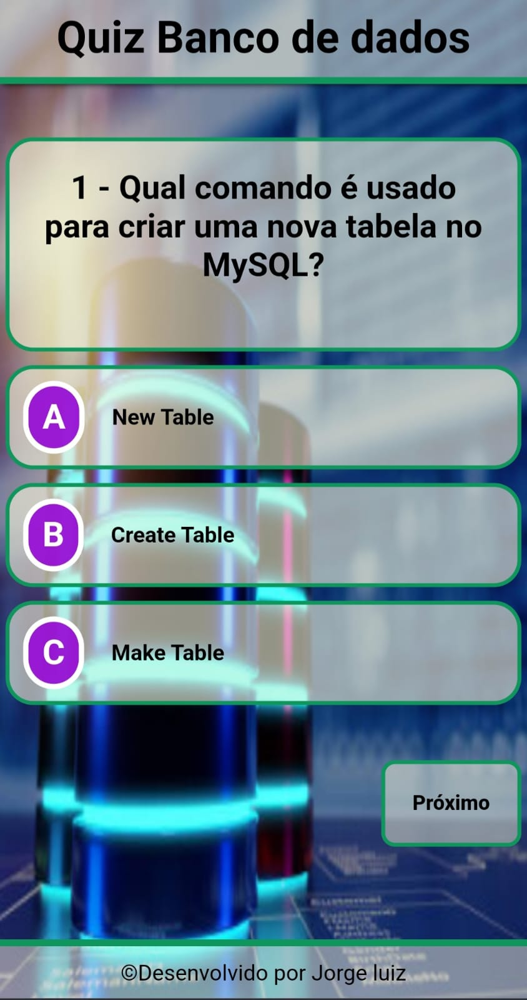
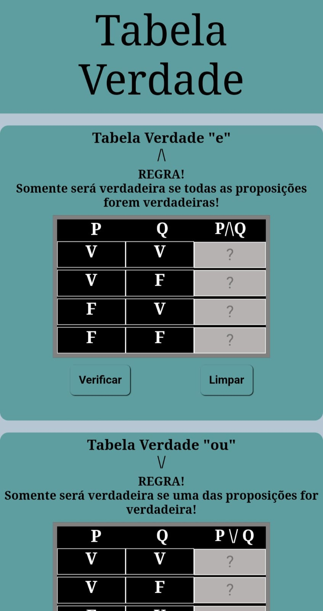
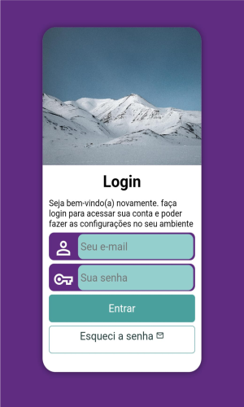
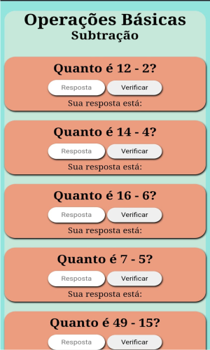
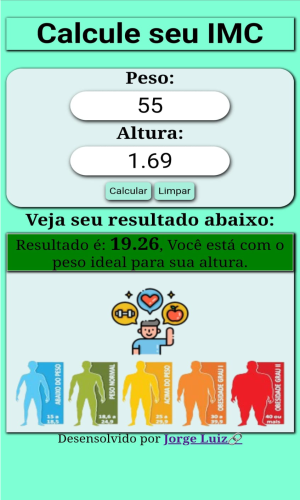
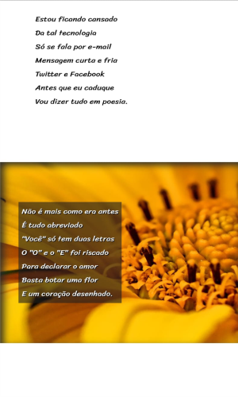
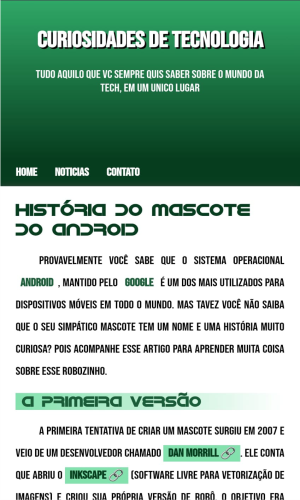
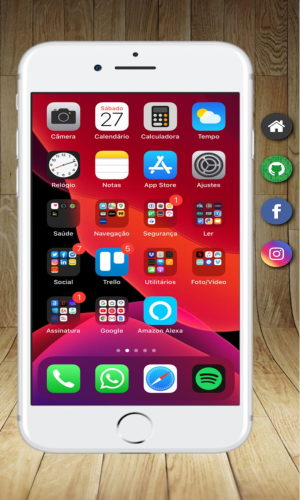

App +Saúde
O App +Saúde está sendo desenvolvido em HTML5, CSS3 e JavaScript. Com ênfase na saúde do idoso, o aplicativo oferecerá o gerenciamento de prescrições médicas, agendamentos de consultas, retornos, gerenciamento de endereços de hopitais e clinica mais proximas. Contará com outras tecnologias que no momento está sob sigilo. Será desenvolvida tanto para dispositivo móvel, quanto para desktop e web.
GITHUB🔗, está organizado pelo nome do projeto.
Projeto Rick and Morty API React e Vite
Projeto Rick and Morty, é um álbum de figuras e informações pessoais de todos os personagens da série, pode ser pesquisado por ID ou no botão "próximo". Desenvolvido em HTML5 e CSS₃, JavaScript, React e Vite, consumo de API. Todo layout foi feito manualmente, ou seja, sem uso de frameworks como objetivo de treinamento das técnicas de CSS.
GITHUB🔗, está organizado pelo nome do projeto.
Loja Arte Bela Artesanatos
Trata-se de uma loja de e-commerce com produtos feito a mão e está funcionando 100% usando a hospedagem do GITHUB-pages. Desenvolvida em HTML5 e CSS3 e linguagem JavaScript, a loja oferece uma estrutura onde o cliente pode navegar pelos itens, ordenar por preço e comprar. Ao clicar no botão "comprar", a venda será direcionada para o WhatsApp do proprietário. Podemos ler os valores, missão e produtos ao passar o mouse por cima de cada nome respectivamente. É uma modesta, porém, funcional e colhedora.
GITHUB🔗, está organizado pelo nome do projeto.
Quiz Banco de Dados
Atualizando... Veja o código no GITHUB🔗, está organizado pelo nome do projeto.
Tabela Verdade
Atualizando... Veja o código no GITHUB🔗, está organizado pelo nome do projeto.
Projeto Login
Tela de login desenvolvida em HTML5 e CSS3 onde ponho em prática aprendizados e técnicas como responsividades através de 'media query' em três tamanhos de telas: celulares de 375px até 768px; tablets de 768px até 992px; desktop de 992px até 1200px e televisores acima de 1200px. Faz-se presente a aplicabilidade de cores e estilos do CSS3. Veja o código no GITHUB🔗, está organizado pelo nome do projeto.
Projeto Quiz Matemática
Quiz de operações básicas de matemática, contém cinco fases com oito perguntas diferentes, desenvolvidas inicialmente em HTML5 e CSS3 e posteriormente aplicada a linguagem JavaScript. O Quiz é responsivo e atende os três tamanhos de telas: celular, tablet e telas acima de 1200px. Veja o código no GITHUB🔗, está organizado pelo nome do projeto.
Projeto IMC
Calculadora de índice de massa corporal (IMC) 100% funcional, desenvolvida em HTML5, CSS3 e JavaScript. A calculadora mostra os resultados de uma forma descontraída por meio de diferentes fotos para cada peso, e apresenta responsividade através de 'media query'. Veja o código no GITHUB🔗, está organizado pelo nome do projeto.
Projeto Cordel
O cordel moderno de Milton Duarte foi desenvolvido com HTML5 e CSS3 com ênfase na aplicabilidade do efeito paralaxe, no qual a imagem de fundo fica fixa enquanto o conteúdo principal flui por cima, dando estilo à página. Veja o código no GITHUB🔗, está organizado pelo nome do projeto.
Projeto Android
Projeto Android desenvolvido com HTML5 e CSS3, o projeto tem como ênfase a sua responsividade, utilizando dois tamanhos diferentes de imagem para adaptar-se adequadamente aos diferentes tamanhos de telas. É aplicada a técnica de capturar fontes externas de letras por meio de @import, @font-face e root para aplicar cores. Veja o código no GITHUB🔗, está organizado pelo nome do projeto.
Projeto Redes Sociais
Projeto redes sociais desenvolvido com HTML5 e CSS3 tem como ênfase o uso do iframe e suas aplicabilidades. Ao clicar nos ícones laterais, carregará o seu respectivo perfil na tela do celular, criando barra de rolagem vertical (scroll bar) e ampla utilização da folha de estilo. Veja o código no GITHUB🔗, está organizado pelo nome do projeto.
